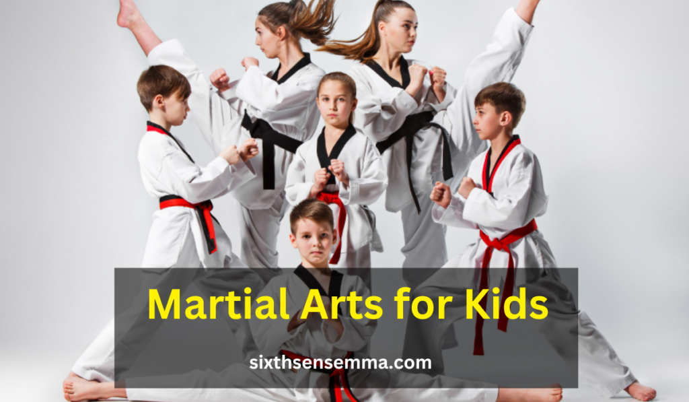
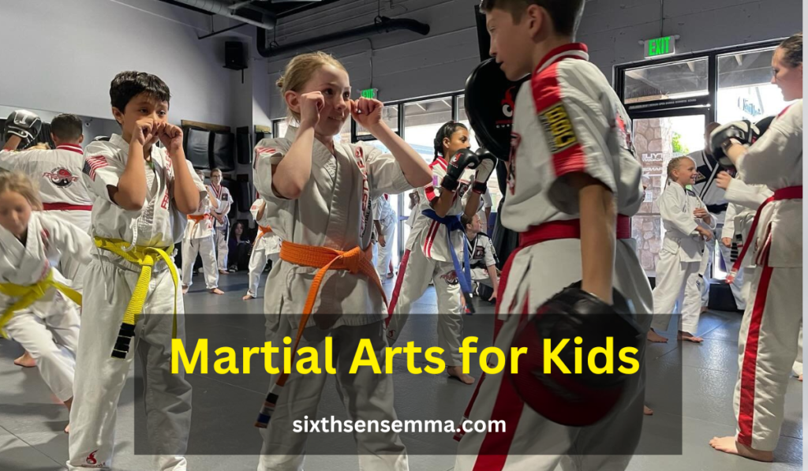
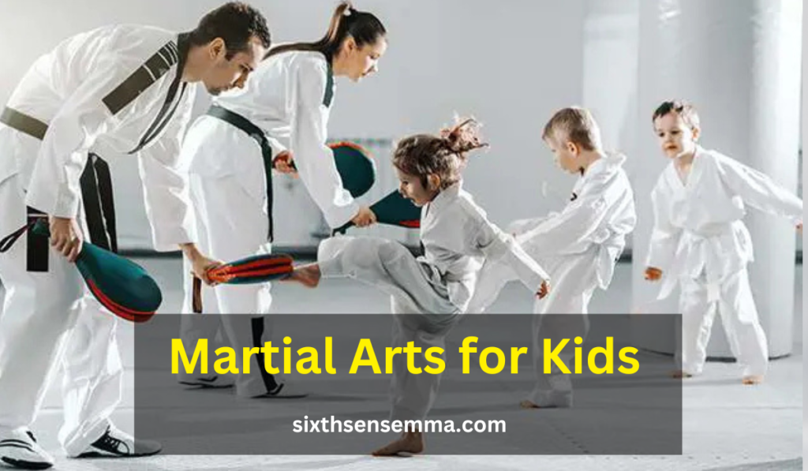
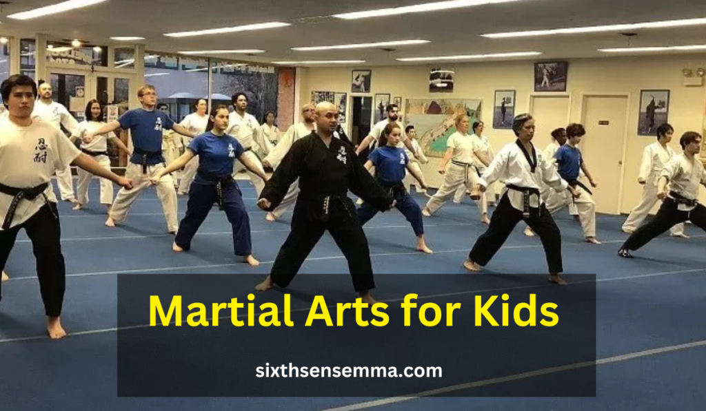

Martial Arts for Kids: Building Confidence and Discipline

Martial Arts for Kids provide more than just self-defense skills; they help children build confidence, discipline, and physical fitness. Enrolling kids in martial arts classes can improve their focus and social skills while keeping them active. With various youth martial arts programs available, parents can easily find suitable training options in their area.
How do Martial Arts for Kids benefit a child’s overall development?
Martial Arts for Kids help children develop discipline, confidence, and respect while enhancing their physical fitness and self-defense skills.
Martial arts for kids can inculcate tremendous benefits for children of various age groups. Simple yet constructive practices like Karate, Taekwondo, Judo, Brazilian Jiujitsu (BJJ), and Kung Fu help children develop self-discipline, focus, and the ability to defend themselves. These styles help practitioners learn physical techniques, but also cultivate moral values such as discipline, self-control, respect, and hard work.
Karate techniques for kids: The art of striking through punching, kicking, and blocking while observing respect and the spirit of discipline.
Taekwondo for Children: Students learn vigorous forms of kicking as well as other energetic movements that improve overall body flexibility and agility.
Children’s Judo: A martial art based on grappling that juices opponent’s strength. Judo improves children’s coordination and confidence.
Exercises in Kung Fu for children: Incorporates a larger range of fluid, smooth movements alongside the agility and discipline of Kung Fu and helps enhance their overall mental and physical health.
Comparison of Martial Arts Styles for Children
| Martial Art Style | Key Focus | Benefits for Kids | Best Age to Start |
|---|---|---|---|
| Karate | Strikes (punches, kicks) | Discipline, respect, self-defense, coordination | 4+ years |
| Taekwondo | Kicks & agility | Flexibility, confidence, speed | 4+ years |
| Judo | Grappling & throws | Balance, self-confidence, problem-solving | 5+ years |
| Brazilian Jiu-Jitsu | Ground-based grappling | Self-defense, strategy, patience | 5+ years |
| Kung Fu | Fluid movements & agility | Strength, focus, discipline | 4+ years |
Proper training under experienced instructors ensures children learn Martial Arts for Kids in a safe and structured environment. It is important for parents to choose a style that best suits their child’s interests and physical abilities to maximize their development and enjoyment.
Benefits of Martial Arts for Kids Training
Physical Benefits of Martial Arts for Kids
The World Martial Arts for Kids are Foundation advocates physical fitness for children through Martial Arts for Kids as it helps strengthen, increase flexibility, and improves overall fitness. The energetic and moving exercises within the training sessions facilitates the young practitioners to build stamina and encourages them to set the foundation for a healthy life.
Enhances Strength, Flexibility, and Coordination
Martial Arts for Kids involve a combination of striking, kicking, blocking, grappling, and defensive movements, which engage multiple muscle groups. These techniques help children develop muscle strength, particularly in their legs, arms, and core, leading to improved posture and body control.
- Strength: Activities such as push-ups, squats, and controlled kicks build muscular endurance.
- Flexibility: High kicks, stretching exercises, and agile footwork enhance range of motion and reduce injury risks.
- Coordination: Learning complex techniques improves hand-eye coordination, balance, and reflexes, helping kids in other sports and daily activities.
Improves Cardiovascular Health and Overall Fitness
Martial arts training is an excellent cardiovascular workout, as it includes fast-paced drills, jumping movements, and high-energy exercises. Regular practice strengthens the heart and lungs, enhancing blood circulation and oxygen flow, which contributes to.
Martial arts training provides a comprehensive approach to physical fitness, offering a wide range of health benefits that go beyond simple exercise. One of the most significant advantages is the enhancement of stamina and endurance. Through consistent practice, individuals develop greater cardiovascular efficiency, allowing the heart and lungs to function more effectively.
This results in improved oxygen circulation throughout the body, reducing fatigue and enabling practitioners to perform daily activities with increased ease and vitality. Whether it’s engaging in prolonged physical exertion or simply maintaining energy levels throughout a busy day, martial arts training fosters resilience and long-term endurance.
Encourages an Active Lifestyle from an Early Age
In today’s digital era, children are increasingly immersed in screen-based activities, often spending hours engaged with smartphones, tablets, and computers. This shift toward a sedentary lifestyle has contributed to a rise in health concerns such as obesity, poor posture, and a lack of physical endurance.
The convenience of technology, while beneficial in many ways, has significantly reduced the amount of time children spend engaging in physical activities, leading to weakened muscles, lower energy levels, and even mental health challenges. To counteract these negative effects, martial arts offer a compelling and enjoyable solution that not only encourages movement but also fosters a deep appreciation for an active lifestyle from an early age.
Mental and Emotional Benefits of Martial Arts for Kids
Martial arts go beyond physical fitness—they play a crucial role in mental and emotional development. The structured training environment helps children cultivate essential life skills such as focus, discipline, confidence, and emotional resilience.
Mental Benefits

Helps Children Develop Focus and Concentration
Martial arts require children to pay attention to instructions, memorize techniques, and execute movements with precision. This improves their ability to concentrate, which translates into better performance in school, sports, and daily tasks.
Martial arts training goes beyond physical fitness, offering profound cognitive benefits that shape a child’s mental development and overall approach to learning. One of the most significant advantages is the enhancement of problem-solving and decision-making skills. Unlike repetitive exercises, martial arts require students to think critically and adapt quickly to different scenarios, whether in sparring sessions, self-defense drills, or structured training exercises.
Each movement and technique demands an understanding of angles, timing, and strategy, compelling children to assess their opponent’s actions and respond with precision. This process strengthens their ability to analyze challenges, weigh potential outcomes, and make quick yet effective decisions under pressure—an invaluable skill that translates into academics, social interactions, and everyday problem-solving.
Promotes Self-Discipline and Goal-Setting Skills
Discipline is a core value in Martial Arts for Kids, as students must follow rules, respect instructors, and commit to training. Kids learn the importance of self-control and how to work towards their goals through belt ranking systems and skill progression.
- Encourages time management and responsibility.
- Helps children set short-term and long-term goals, boosting motivation.
- Fosters a sense of accountability and self-improvement.
Teaches Patience and Perseverance Through Structured Training
Martial arts emphasize consistent practice and gradual progress, teaching children that success takes time and effort. Whether mastering a new technique or advancing in rank, kids learn to overcome challenges with patience and determination.
- Builds resilience by reinforcing the idea that mistakes are part of learning.
- Develops a growth mindset, where effort leads to improvement.
- Encourages emotional control and the ability to stay calm under pressure.
Emotional Benefits
Boosts Self-Esteem and Confidence in Young Learners
As children develop their skills and earn higher ranks, they gain a sense of achievement and self-worth. Martial arts provide constant positive reinforcement, helping kids believe in their abilities.
- Encourages self-expression and individuality.
- Helps shy or introverted kids gain confidence in social settings.
- Teaches kids to stand up for themselves in a respectful manner.
Provides an Outlet for Stress Relief and Emotional Regulation
Martial arts act as a healthy way to release pent-up energy, frustration, and stress. The physical movements combined with breathing techniques help children manage their emotions and stay calm in challenging situations.
- Reduces anxiety and stress through structured movement.
- Helps children develop emotional awareness and self-control.
- Improves mood and mental well-being through physical activity.
Encourages Positive Social Interactions and Teamwork
Martial arts classes create a supportive and respectful environment, helping kids build friendships and learn teamwork. They practice partner drills, sparring, and group exercises, which enhance their ability to communicate and cooperate.
- Develops empathy and respect for peers and instructors.
- Fosters sportsmanship by teaching kids to win and lose gracefully.
- Strengthens social skills and helps children feel a sense of belonging.
By integrating martial arts into their routine, children develop a strong foundation for mental, emotional, and social growth, equipping them with essential life skills for the future.
Building Confidence Through Martial Arts
Confidence is one of the most valuable qualities a child can develop, and martial arts training plays a crucial role in building self-assurance. Through structured learning, personal achievements, and a supportive environment, children gain a sense of self-worth and empowerment.
Personal Milestones and Achievements Enhance Confidence
Martial arts use a belt ranking system and skill progression that allow children to set goals and achieve them step by step. Each new belt earned represents dedication, hard work, and improvement, reinforcing a sense of accomplishment.
- Learning new techniques and mastering complex moves builds self-belief.
- Successfully advancing to the next belt level instills a sense of pride.
- Overcoming challenges in training teaches children they are capable of achieving their goals.
This structured progression encourages children to push their limits while developing resilience and determination.
Public Performances and Competitions Offer Opportunities for Self-Growth
Martial Arts for Kids encourage children to participate in demonstrations, tournaments, and public performances, helping them develop self-expression and stage presence. These activities allow kids to face their fears, build composure under pressure, and develop a sense of achievement.
- Competitions teach children to handle success and setbacks gracefully.
- Public demonstrations boost confidence in speaking and performing in front of others.
- Sparring sessions allow kids to test their skills in a controlled and safe environment, reducing fear and hesitation.
Facing these challenges helps children become more assertive, independent, and courageous in everyday situations.
Positive Reinforcement Fosters a Supportive Learning Environment
A key factor in confidence-building is receiving encouragement from instructors and peers. Martial arts schools emphasize positive reinforcement, where children receive praise for effort, improvement, and dedication.
Instructors provide constructive feedback, helping kids recognize their strengths.
Training partners and classmates encourage each other, building camaraderie.
Respectful discipline ensures a nurturing and uplifting atmosphere for learning.
The combination of recognition, encouragement, and achievement ensures that children develop a strong sense of self-confidence that extends beyond martial arts and into their daily lives.
How Martial Arts for Kids Build Confidence
| Confidence-Building Factor | How It Helps Children | Impact on Self-Confidence |
|---|---|---|
| Belt Progression System | Encourages goal-setting and achievement | Instills pride and motivation |
| Learning New Techniques | Develops mastery and skill competency | Builds belief in one’s abilities |
| Competitions and Performances | Challenges kids to showcase skills publicly | Reduces fear and enhances courage |
| Sparring and Controlled Drills | Teaches resilience and decision-making under pressure | Encourages self-assurance and quick thinking |
| Positive Reinforcement | Encourages effort and perseverance | Creates a supportive and motivating atmosphere |
| Respectful Environment | Fosters teamwork and social confidence | Helps kids feel valued and encouraged |
By engaging in martial arts, children not only develop physical skills but also gain the self-confidence necessary to succeed in various aspects of life—from school to social interactions and beyond.
Instilling Discipline in Young Martial Artists
Discipline is one of the core principles of martial arts, and children who train in martial arts develop a strong sense of responsibility, respect, and self-control. Unlike traditional sports, martial arts emphasize structured routines, respect for authority, and consistent practice, which helps children become more disciplined in all aspects of life.
Structured Routines and Protocols in Martial Arts Schools
Martial arts classes follow a strict structure, where students must adhere to set rules, dress codes, and schedules. This structured environment teaches children to follow instructions, stay organized, and develop a routine.
Bowing before entering the dojo or training area instills respect and humility.
Following a step-by-step learning system encourages discipline in achieving small goals before progressing.
Practicing self-control in sparring and drills helps children understand boundaries and patience.
The consistency of training translates into better discipline at home and school, helping kids stay focused on their studies and responsibilities.
Promoting Respect for Instructors, Peers, and Oneself
Respect is a fundamental value in all martial arts disciplines. Children are taught to respect their instructors, training partners, and even opponents, which fosters a positive and supportive environment.
Instructors are addressed with formal titles (Sensei, Sifu, Coach), reinforcing respect for authority.
Students bow to each other before and after practice, showing appreciation for their training partners.
By practicing self-discipline, children develop a sense of self-respect, which boosts confidence and self-worth.
This culture of respect carries over into daily life, encouraging children to treat teachers, parents, and peers with kindness and understanding.
Teaching the Value of Consistent Practice and Perseverance
Martial arts require repetitive practice to master techniques, teaching children the importance of patience and hard work. Unlike instant gratification, martial arts emphasize that true skill and success come with dedication and perseverance.
Advancing through belt ranks takes time and effort, teaching goal-setting and persistence.
Training regularly strengthens resilience and determination.
Overcoming challenges, such as learning difficult techniques or losing in competitions, helps children develop a growth mindset.
By instilling discipline, martial arts prepare children to handle obstacles in school, sports, and personal life with confidence and determination.
Choosing the Right Martial Art for Your Child

Selecting the right martial arts style for a child depends on their personality, physical abilities, and interests. Each discipline offers unique techniques and benefits, making it essential for parents to consider which style aligns best with their child’s needs.
Overview of Popular Martial Arts Styles for Kids
| Martial Art Style | Key Focus | Best For |
|---|---|---|
| Karate for Children | Striking (punches, kicks) | Kids who enjoy structured learning and self-defense techniques. |
| Taekwondo Classes for Kids | Kicking techniques & agility | Children who love dynamic, high-energy movements and fast kicks. |
| Judo for Kids | Grappling & throws | Those who prefer hands-on learning and close-contact techniques. |
| Brazilian Jiu-Jitsu (BJJ) | Ground fighting & submissions | Kids who enjoy problem-solving and strategy-based combat. |
| Kung Fu Lessons for Kids | Fluid movements & forms | Children who like traditional, artistic, and acrobatic movements. |
Each of these martial arts disciplines helps develop physical fitness, discipline, and self-confidence, but the best choice depends on the child’s personality and interests.
Factors to Consider When Choosing a Martial Art
Selecting the right martial art for a child is a decision that should be guided by their unique personality, interests, and physical attributes. Each martial art offers distinct techniques, philosophies, and training methods, making it essential to align the practice with what best suits the child’s natural inclinations. Some children are drawn to fast-paced, high-energy movements that involve powerful kicks, quick strikes, and dynamic footwork.
The Importance of Trial Classes and Observing Sessions
Before committing to a specific martial art, it’s beneficial to attend trial classes or observe different training sessions. This allows parents and children to:
Finding and Preparing for Kids’ Martial Arts Classes
Enrolling your child in martial arts is an exciting step toward building confidence, discipline, and physical fitness. However, choosing the right school and preparing your child for their first class requires thoughtful planning. Below is a detailed guide on finding the right martial arts class and what to expect.
Finding Local Martial Arts Classes
Choosing the right martial arts academy involves researching options, seeking recommendations, and evaluating the quality of training.
Utilize Online Directories and Community Boards
The internet is a great resource for finding local martial arts classes for kids. Parents can explore:
- Google Maps & Business Listings: Search for nearby martial arts schools and read reviews from other parents.
- Martial Arts Directories: Websites like Dojo Locator and Martial Arts Near You provide lists of schools based on location.
- Social Media & Community Forums: Platforms like Facebook groups and Reddit often have recommendations from local parents.
Checking the school’s website can provide insights into class schedules, pricing, and instructor qualifications.
Seek Recommendations from Schools, Parents, and Local Sports Centers
Word-of-mouth referrals are valuable when looking for reputable martial arts schools.
If you’re considering enrolling your child in martial arts, it’s important to explore all available options to ensure they receive quality training in a supportive and structured environment. Begin by consulting their school or teachers, as they may have recommendations for after-school programs that incorporate martial arts. Many educational institutions collaborate with local dojos or training centers, offering students a seamless transition from academics to physical training. These programs are often designed with children’s development in mind, balancing discipline, self-defense, and character-building with fun and engagement.
Evaluate Facilities, Instructor Credentials, and Class Structure
Before enrolling, visit the martial arts school to assess:
When selecting a martial arts program for your child, it is crucial to assess multiple factors to ensure they receive high-quality training in a safe and nurturing environment. One of the most important considerations is the cleanliness and safety of the facility. A well-maintained training area should be free of hazards, properly ventilated, and well-lit to create a comfortable and secure atmosphere. Safety mats are an essential feature, as they provide cushioning to reduce the impact of falls and prevent injuries during practice. The overall hygiene of the facility, including the cleanliness of equipment, restrooms, and communal areas, reflects the level of care and professionalism maintained by the martial arts school.
What to Expect in a Kids’ Martial Arts Class
A well-structured martial arts class follows a specific format designed to build physical skills, focus, and self-discipline.
Warm-Up Exercises and Stretching Routines
Before practicing techniques, kids start with dynamic warm-ups and stretching, which:
- Improve flexibility and prevent injuries.
- Increase blood flow and muscle activation.
- Help children mentally transition into training mode.
Typical warm-ups may include:
✅ Light jogging or jumping jacks
✅ Arm and leg stretches
✅ Balance drills and core strengthening exercises
Skill Drills, Forms, and Sparring Practices
After warm-ups, students engage in technical training, which varies depending on the martial art:
| Training Component | What It Involves | Benefits |
|---|---|---|
| Skill Drills | Practicing punches, kicks, and defensive moves | Improves technique and reaction time |
| Forms (Kata/Poomsae) | Learning sequences of movements | Enhances memory, focus, and precision |
| Sparring (Controlled Practice Fights) | Practicing techniques with a partner | Builds confidence, adaptability, and discipline |
Sparring is introduced gradually and in a safe environment, ensuring that kids learn self-control and respect for their training partners.
Cool-Down Periods and Reflection Sessions
At the end of class, students engage in cool-down exercises to relax their muscles and prevent soreness. Instructors often include:
- Breathing exercises and light stretching to promote relaxation.
- Reflection sessions where students discuss lessons learned.
- Encouragement and feedback to help kids stay motivated.
Many classes also include a brief discussion on discipline, respect, and goal-setting, reinforcing the values of martial arts.
Conclusion: The Lifelong Benefits of Martial Arts for Kids
Martial Arts for Kids offer far more than just self-defense skills; they provide children with a holistic approach to physical, mental, and emotional development. Through structured training, kids not only enhance their strength, flexibility, and coordination but also develop essential life skills such as discipline, confidence, and perseverance.
From Karate and Taekwondo to Judo, Brazilian Jiu-Jitsu, and Kung Fu, each martial art offers unique benefits. The key is finding the right style and environment that aligns with a child’s personality and interests. Parents should explore trial classes, observe instructors, and prioritize safety to ensure the best experience for their child.
Ultimately, enrollment your child in martial arts can be one of the most rewarding decisions for their development. It lays the foundation for a healthy lifestyle, strong character, and a positive mindset that will benefit them well into adulthood. Whether they pursue martial arts as a sport, a hobby, or a way of life, the lessons learned will stay with them forever.
Finding Martial Arts for Kids Near Me
Finding a reputable martial arts academy is crucial for ensuring your child receives quality training. Here’s how to locate the best options:
Use Online Directories and Search Engines
You can quickly find nearby martial arts schools using online resources:
- Google Search & Maps – Type “Kids martial arts classes ——-” to get a list of local academies with reviews and directions.
- Martial Arts Directories – Websites like Dojo Locator, Martial Arts Near You, or Yelp help find schools by location and rating.
- Social Media & Community Groups – Facebook groups and forums often have parent recommendations and reviews of local schools.
Ask for Recommendations
Personal recommendations are one of the best ways to find a trusted martial arts school. Consider:
- School Teachers & Coaches – Many schools collaborate with martial arts academies for after-school programs.
- Other Parents – Ask friends or neighbors whose children attend martial arts classes.
- Local Recreation Centers & Gyms – Community centers often have affordable martial arts programs for kids.
Visit and Evaluate the Martial Arts for Kids Academy

Before enrolling, visit the facility and observe a class to assess:
✅ Clean and Safe Environment – Mats should be well-maintained, and safety protocols should be in place.
✅ Qualified Instructors – Look for certified instructors with experience teaching children.
✅ Class Structure – Ensure there’s a balance of discipline, skill-building, and fun.
✅ Trial Classes – Many schools offer free or discounted trial sessions to experience the training style.
By taking these steps, you can find the best **kids’ martial arts classes ——-, ensuring a positive and enriching experience for your child.
FAQ's
The best martial art for beginners depends on personal goals and preferences. Brazilian Jiu-Jitsu (BJJ) is favored for its focus on technique, making it accessible for all. Karate is also a strong choice, emphasizing basic movements and self-discipline. It’s beneficial for beginners to try different classes to find what suits them best.
There is no age limit for starting martial arts! People of all ages can benefit from training. Many schools offer adult classes that cater to newcomers, allowing them to learn at their own pace and enjoy the physical and mental benefits of martial arts.
The cost of martial arts training varies by school, location, and class types. Many schools offer flexible pricing, including monthly memberships or per-class fees. It’s wise to explore different options to find a budget-friendly school that meets your needs.
Participation costs typically range from $100 to $150 per month for memberships, with per-class rates between $15 and $30. Annual memberships may be available for $800 to $1,200, often providing savings. Additionally, consider any extra fees for uniforms and equipment.
For your first day, wear comfortable athletic clothing. Most schools will provide a uniform (like a gi) for you to wear once you enroll, but you want to be ready to move in whatever you choose! Just check with the school beforehand to see if they have any specific requirements.
The time it takes to earn a belt varies widely based on the martial art and your dedication. Generally, it can range from 3 months to several years. Factors influencing this timeline include attendance, effort, and the specific belt progression system of the style you are learning.
Absolutely! Martial arts classes are intended for all fitness levels. Many schools offer beginner programs that help you gradually build your strength and flexibility, so don’t worry if you’re starting from scratch!
Train with us in Coppell
The first class is free. Shorts, a t-shirt and a water bottle. We lend the rest.
Book a free class